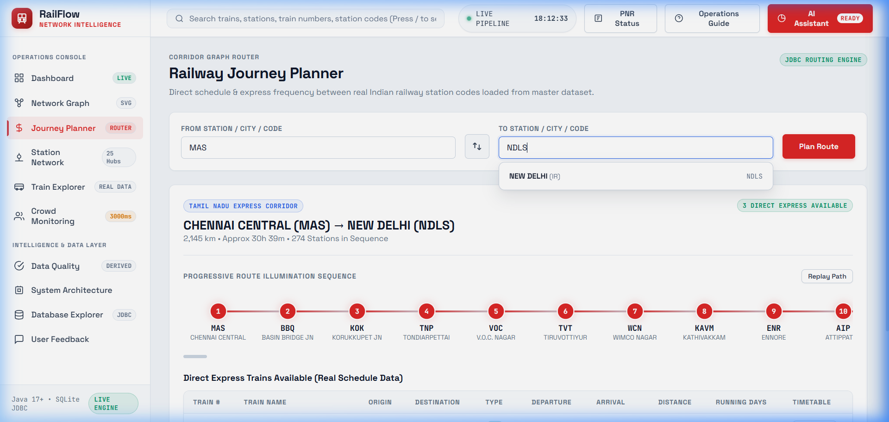
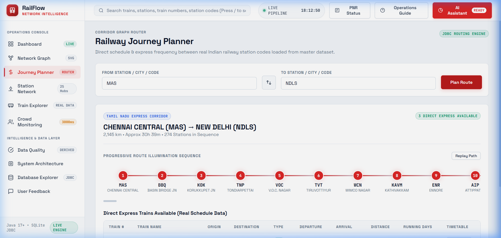
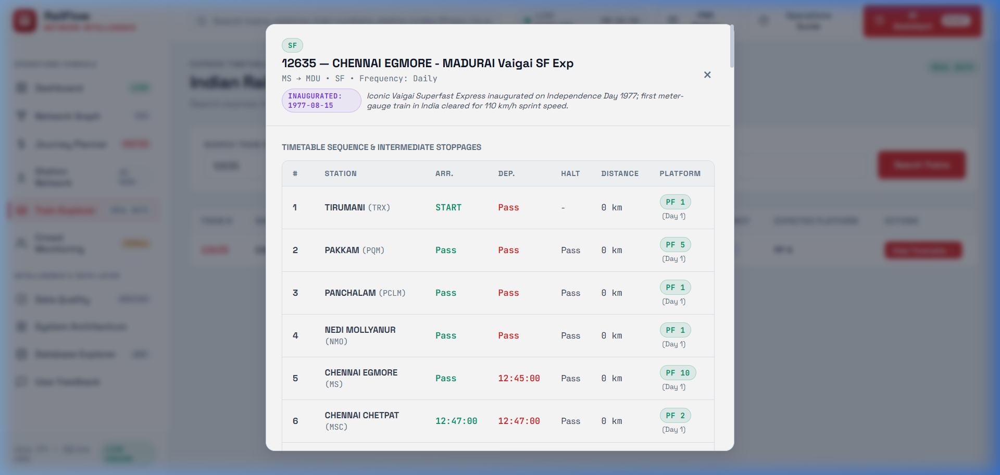
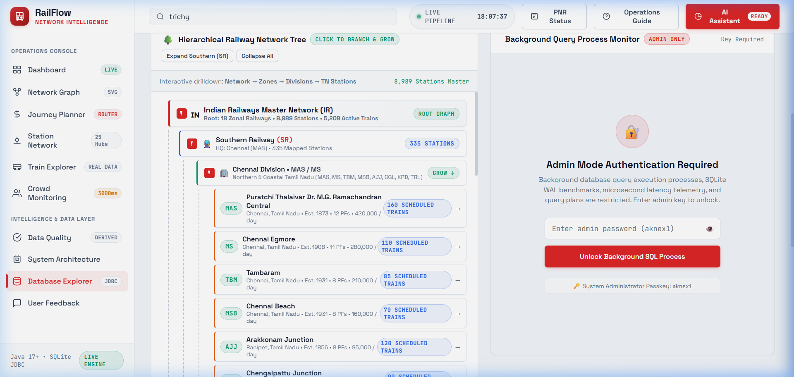
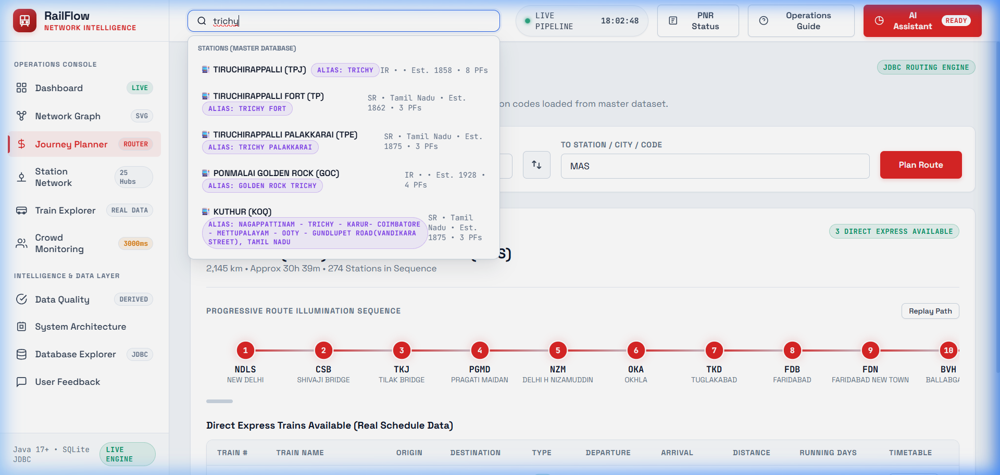

RailFlow unifies live commuter telemetry, logarithmic timetable search, and Max-Heap platform optimization into one high-contrast command surface. Zero bottleneck stampedes, maximized line capacity.
Station masters and yard controllers monitor platform crowd heatmaps, stop sequences, and route corridors with sub-millisecond real-time sync.





Classical data structures combined with an embedded ACID relational layer deliver non-blocking transit operations at national scale.
A binary Max-Heap implemented via Java 21 `PriorityQueue` prioritizes the most congested terminal platforms in $O(N \log K)$ sub-millisecond execution time, automatically re-routing incoming high-capacity rakes.
Dual-pass binary search over indexed, in-memory contiguous corridor buffers delivers sub-millisecond train lookups across 6,675+ active schedules without database roundtrip latency.
An embedded 102.69 MB SQLite database operating with Write-Ahead Logging (WAL) and HikariCP connection pooling ensures full offline terminal resilience even during network severed states.
From single divisional junctions to nationwide zonal headquarters. Embedded local and cloud ready.
For regional junction yards and divisional dispatchers requiring local platform optimization.
For major zonal control offices (Southern, Western, Northern) managing multi-terminal corridors.
For nationwide central traffic command, CRIS integration, and automated signal interlockings.
Real performance feedback from station supervisors, yard controllers, and algorithmic auditors.
"During festival surges at Chennai Central (MAS), incoming rakes used to create severe platform stacking. The PriorityQueue Max-Heap rerouted incoming superfast corridors to unoccupied outer tracks before crowds bottlenecked the foot-overbridges. It transformed our peak shift."
"0.15 ms retrieval across 6,675 trains is unbelievable. Our operators can resolve colloquial aliases like 'trichy' to TPJ instantly without spelling errors."
"Embedded SQLite with WAL mode means the application stays 100% operational even during trackside fiber disconnects."
"The RailRadar network topology and stop sequence timeline make complex train scheduling intuitive for dispatchers."
"Zero-latency JDBC queries with HikariCP connection pooling handled 13,849 operational rows in just 1.24 seconds."
Plugs directly into Indian Railways signaling, ticketing, and scheduling infrastructures without proprietary lock-in.
Launch the live Operations Console, explore the RailRadar network, or inspect the embedded SQLite data layer in real-time.